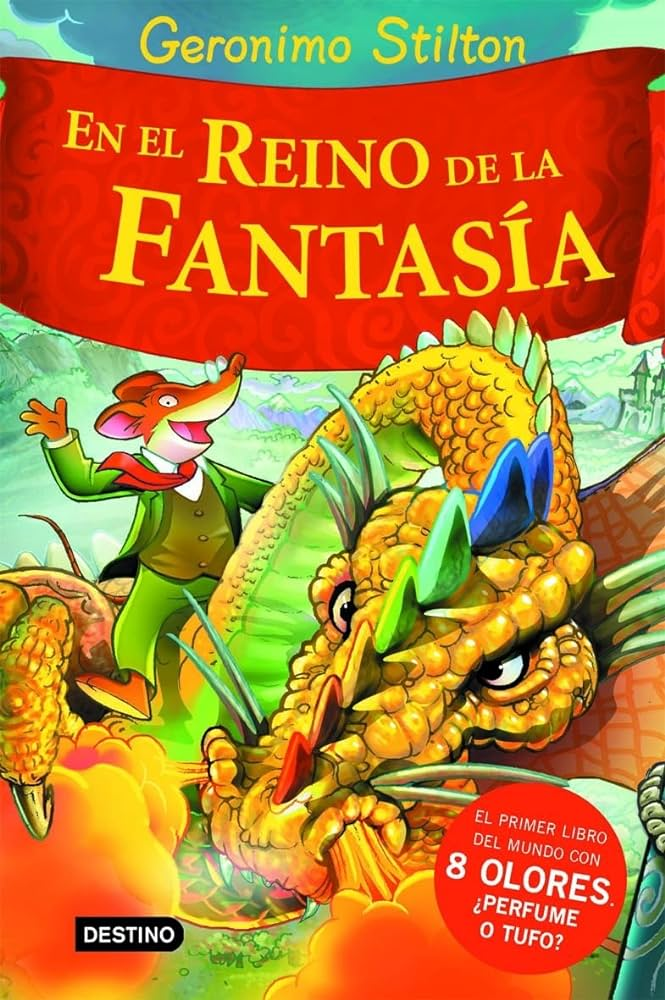
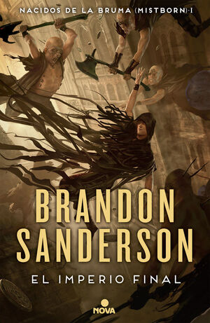
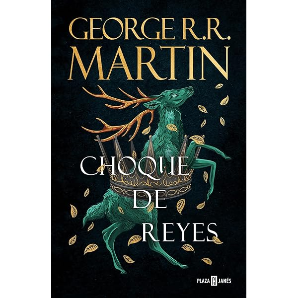

Bienvenidos a la Biblioteca de Muskiz
Descubre un mundo de conocimiento, inspiración y aprendizaje en la Biblioteca de Muskiz. Aquí encontrarás una amplia colección de libros y recursos digitales
para todas las edades. Nuestro objetivo es ofrecerte un espacio abierto y accesible donde puedas disfrutar de la lectura, la investigación y la cultura. Explora nuestras
secciones y consulta el catálogo en línea. ¡Te invitamos a formar parte de esta experiencia literaria y educativa en Muskiz!
Nuestras Recomendaciones
Infantil y Juvenil
|  |
|
|
| Geronimo Stilton |
Capitan Calzoncillos |
Diario de Greg |
Adultos
|  |
 |
 |
| Mistborn |
Juego de Tronos |
El Señor de Los Anillos |